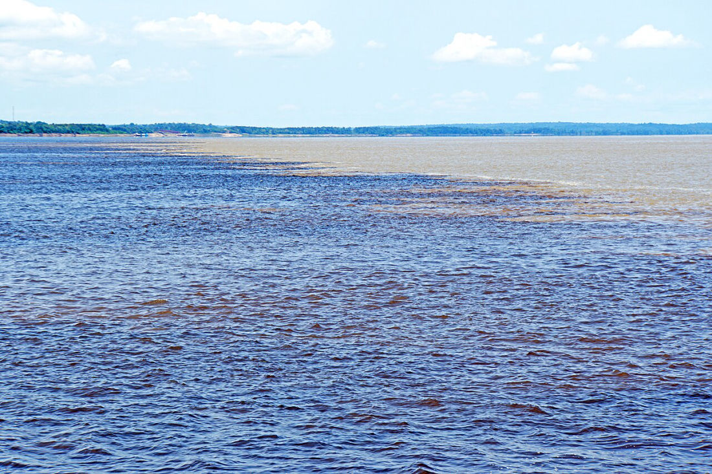
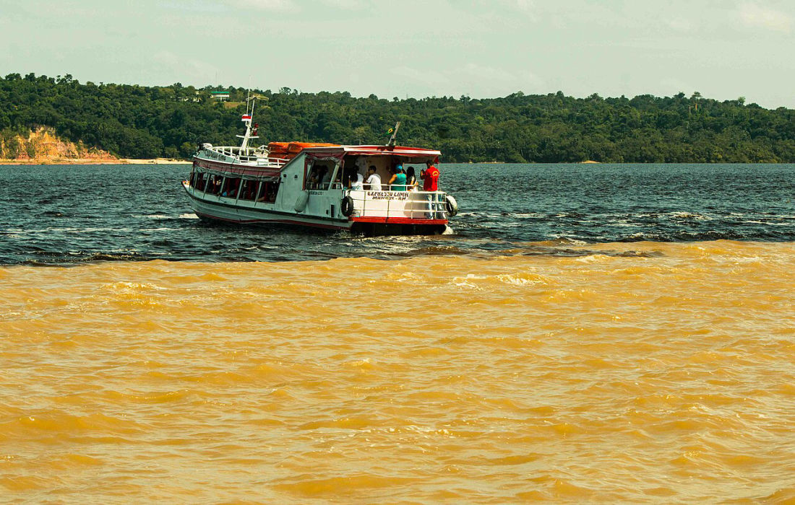

Just outside Manaus, something happens that looks almost impossible. Two giant rivers come together — one the colour of strong coffee, the other a pale, sandy brown — and instead of blending into one, they run side by side for kilometres, split by a line you can see with your own eyes. This is the Meeting of the Waters, the spot where the Rio Negro and the Rio Solimões begin to form the Amazon. And it's every bit as strange and beautiful in person as it looks in photos.
What Is the Meeting of the Waters?
A few kilometres downstream from Manaus, the dark Rio Negro meets the muddy Rio Solimões. From there the two flow together — touching but not mixing — for around 6 km before they finally merge and continue on as the Amazon River. The dividing line is sharp enough that you can sit in a boat with one hand in warm black water and, a metre away, watch the pale current slide past. It's one of the most famous natural sights in all of Brazil.
Why Don't the Two Rivers Mix?
It comes down to three things: temperature, speed and density. The Rio Negro runs warm — around 28°C — slow and dark, stained by tannins from the forest. The Rio Solimões is cooler, about 22°C, much faster, and heavy with pale sediment carried down from the Andes. The two waters are so different that they refuse to blend straight away, so they travel together, side by side, until the river finally mixes them kilometres downstream.

How We Do the Meeting of the Waters at Vista do Lago
Most visitors see the Meeting of the Waters from a big, crowded tour boat on a fixed schedule out of Manaus. We do it differently. As part of your stay at Vista do Lago, we run it as a smaller, more private outing, with the timing built around you — heading out when the light is best and the water is calmest, and folding it into a route that takes in the quieter, wilder corners of the river that the day-trippers never reach. You get the famous view, without the crowd.
What to Expect on the Trip
It's an easy, comfortable outing on the water. Here's what tends to stay with people:
- Feel the line with your own hand — dip your fingers in and feel the warm Negro turn into the cool Solimões in the space of a metre.
- Watch for pink dolphins — the boto often surfaces around the boundary, where the mixing waters stir up fish.
- Get the photo — the contrast between dark and pale water is even more striking from the boat than from the air.
- Travel light and unhurried — a small boat, your guide, and time to actually take it in.

See It From the Sky
Hard to picture two rivers refusing to mix? This short clip shows the phenomenon from above better than any description — give it a watch before you come:
"How the Meeting of the Waters works" — Manual do Mundo (YouTube).
Good to Know Before You Go
The calmest water and the softest light are in the morning, so we usually head out early. Bring sun protection, a hat, sunglasses and a camera — there's not much shade on the river. The outing pairs perfectly with the rest of your stay: a jungle walk, a sunset canoe paddle or a night out looking for caimans. Tell our team what you most want to see and we'll shape the day around it.